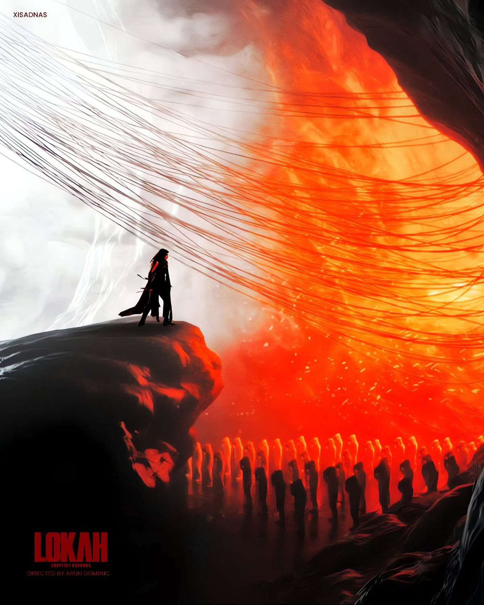
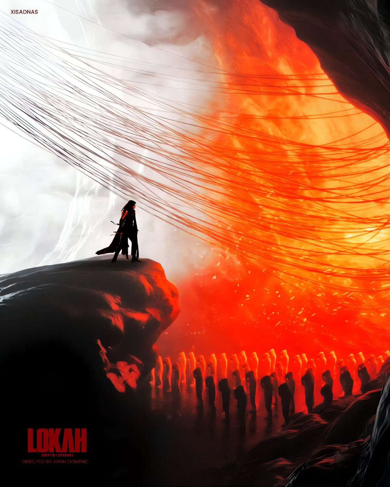
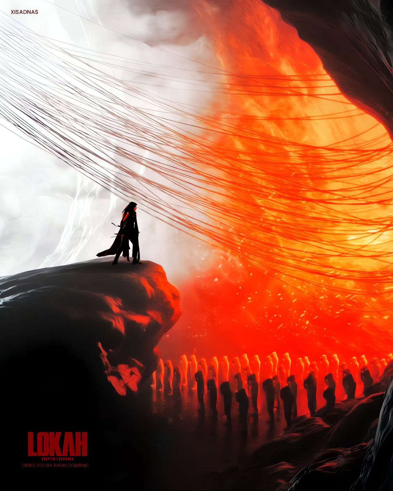

Posters
 

Director : | Dominic Arun |
Lead Crew : | Kalyani Priyadarshan, Naslen, Sandy Master, Tovino Thomas, Mammootty, Dulquer Salmaan |
Genre : | Fantasy/Adventure |
Lokah: Chapter 1 – Chandra is a gritty Tamil sci-fi action drama that blends cosmic mythology with modern warfare. Set in a near-future Chennai, it follows Chandra, a former space-research officer turned rebel after discovering a secret experiment linking divine energy and AI consciousness. When the government weaponizes that power, he becomes the only barrier between humanity and digital extinction. With sharp visuals, philosophical undertones, and high-octane sequences, the film explores destiny, technology, and faith. It marks the opening of the Lokah Cinematic Universe, where science meets spirituality and one man’s light challenges the shadow of control.
From My point of view, Lokah: Chapter 1 – Chandra stands out as a gutsy Tamil attempt to fuse mythology with science fiction. The concept itself feels refreshing — a world where divine energy, human ambition, and artificial intelligence collide. You’d appreciate how the film avoids the usual mass-hero formula; Chandra comes across as a flawed, introspective protagonist rather than a larger-than-life savior. The cinematography captures a distinct tone — dark, industrial, almost poetic at times — and the background score amplifies that mood without overwhelming it. The film’s first act builds curiosity well, introducing its universe and hinting at a deeper conspiracy. You’d probably enjoy the symbolic use of light and shadow to mirror Chandra’s moral conflict. Performances are committed, particularly from the lead, who balances intellect and intensity convincingly. But the film isn’t flawless. The pacing drags midway; certain sequences feel stretched when they should hit harder. A few visual-effects shots appear rushed, pulling you out of the immersion. The script occasionally lapses into heavy-handed dialogue, where subtlety could have made the ideas resonate more. Emotional depth also flickers inconsistently — some key moments feel designed for impact rather than earned through buildup. Still, for you, Lokah: Chapter 1 succeeds as a bold foundation for a larger cinematic universe. It proves that Tamil cinema can explore speculative, high-concept storytelling without losing its cultural roots. Imperfect but ambitious, the film leaves you curious about what Chapter 2 might dare to attempt — and whether Chandra’s light truly outlives his shadow.

Share Your Thoughts